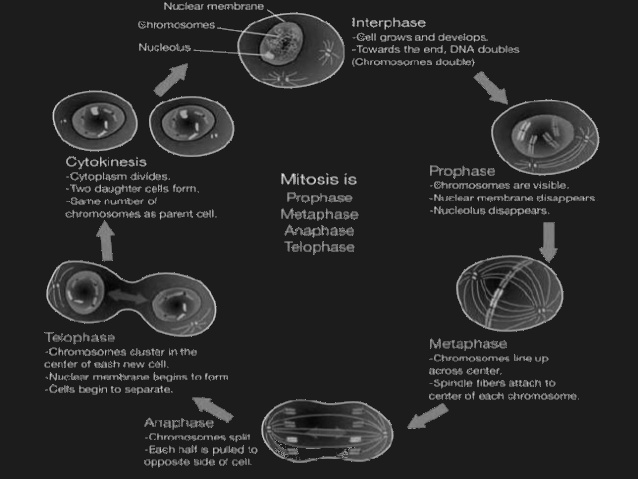

Cell division, or mitosis, is used to make identical copies of cells. There are billions of cell divisions in the average human body every day. In order to make an identical copy, the cell has to replicate its DNA. Then the chromosomes line up and split. There is also another kind of cell division, meiosis, which is used to make gametes. Meiosis produces four cells instead of two, and the copies are not genetically identical to the original. They have half the DNA.
Mitosis is the normal cell division done by almost all the cells in your body. It is when one cell splits into two exact copies (genetically) of itself.
Meiosis is used to create sex cells. It is similar to mitosis hapenning twice, except with some slight changes, since meiosis creates four cells, not two.
Before meiosis can begin, a germ cell, which is a diploid cell, must replicate its DNA. This creates sister chromatids, which are connected at the centromere, which is the center of the chromosome. Now it begins to differ from mitosis. In prophase I, homologous chromosomes cross over, meaning that they exchange parts of the chromosome. This ensures genetic diversity for the gametes. After this, in metaphase I, anaphase I, and telophase I, the centrosomes create microtubules and split the cell, separating homologous chromosomes. This creates two haploid cells. Now in prophase II - telophase II, a process almost identical to mitosis happens to each of the haploid cells. The sister chromatids separate, leaving us with 4 haploid cells.